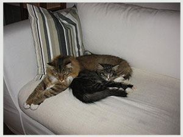

Deze zomer hebben we een bezoekje gebracht aan 9 Levens Davy Jones. Wat zijn we trots op hem........
Tanya en Adolfo bedankt voor de fantastische week vol entertainment, verrassingen en jullie vriendschap.
Weena, Torv Hede's Reza( liefje) Ilithya Santaelles*es (Titi) en Davy Jones zijn in liefde volle handen bij jullie, een beetje verwent, haha.
De taart was een verrassing, maar te mooi om op te eten.
Tartistas


NL*Felishof's Arcania

Klaas en Miranda bedankt voor het ons toevertrouwen van Arcania.
Suske en Wiske, Ludo en Catharina hebben de cattery verlaten.

Onze Ludo heeft eindelijk zijn plekje gevonden bij Daniele en haar kinderen.
Daniele heel veel plezier met Ludo en dat hij maar snel vriendjes mag worden met de hond.

Ann en Chris,
Het was leuk om jullie te ontmoeten. Voor jullie een hele trip vanuit UK.
Wij hopen dat Catharina snel haar plek vind bij jullie en zij in de toekomst mooie kittens mag brengen binnen cattery Drogo's. Heel veel plezier met haar en jullie andere katten. Tot volgend jaar in Cornwall.
 
Wiske alias Noa heeft haar plekje gevonden bij Anouk.
Ze leeft daar samen met Olly,Syl en Izzy (9levens Aslynn).
Anouk we zijn blij dat je het aandurft met nog een 9 leventje.
We weten dat ze het super heeft bij jouw.
Geef de mannen en dames een dikke knuf van ons en we houden contact.


Suske alias Chicco is gaan wonen bij Ron en Wilma, waar hij samen met zijn maatje Charlie het huis onveilig maakt.
Ron en Wilma heel veel plezier met de twee jongens.
Joke bedankt voor je update's en hou de Smykkeskrin in de gaten.
Jij weet wat wij bedoelen, haha.
9 Levens Derk 11 maanden

Bedankt familie Endendijk voor de mooie foto’s en de goede zorg van Derk.
Welkom thuis Puck
Bedankt Martine en Dirk dat jullie deze lieve dame aan ons toevertrouwen

Felishof's Lisa Marie is naar onze cattery gekomen
Bedankt Klaas en Miranda voor deze mooie en vooral lieve dame

Lisa haar eerste dag, geheel uitgeblust in de armen van onze dochter
Guinevere en Karl hebben 30-03-2010 7 kittens gekregen.
Nestje 12 Dancing princesses
Van het weekend , 30/31 januari 2010,zijn de kittens Animal cops Phoenix uitgevlogen naar hun nieuwe eigenaren.
Wij wensen iedereen heel veel plezier en geluk met de kanjers van 9 levens.
12-01-2010
Nestje Animal Cops Phoenix update
Foto's Katers Update :
CH Sterrenkatten's Karl, CH Neville Longbottom fra Jerriks Smykkeskrin en
Astor fra Jerikks Smykkeskrin
3-11-2009
Shownieuws update.
Nestje Animal Cops Phoenix geboren.
Nieuwe foto's 9 levens Raven.
Nieuwe foto's 9 levens Jacky Wylde.
22-09-2009
Nieuwe foto's van 9 levens Lewis Hamilton toegevoegd, klik hier
Nieuwe foto's van Pomoma toegevoegd, klik hier
06-09-2009
Het nestje CH Grimnir's Domino en Sterrekatten's Johnny be Good is geboren


9-08-2009
Astor Fra Jerriks Smykkeskrin.


Bedankt Melanie voor wederom zo'n fantastische kater
6-07-2009
Hier een paar foto's van Astor Fra Jerriks Smykkeskrin.
Hij komt naar onze cattery toe.

21-06-2009
Het nestje Grimnir's Coya en Rockringen's Jumpin 'Jack Flash is geboren


7-06-2009
We hebben een bezoekje gebracht aan Kimi Raikkönen, nestje F1.
Hem terug zien was super.
Hij loenst nog steeds.
Bedankt Jaap en Alida voor de goede zorg van Kimi.


14-05-2009
We hebben een bezoekje gebracht aan het nestje Avalon.
Bedankt Jolanda voor de goede zorg van Emma, 9 levens Morgan la Fey
en bedankt familie Broxterman voor de goede zorg van Knuth, 9 Levens Uther Pendragon.


Het was super leuk ze terug te zien in hun nieuwe omgeving.
Tijdens de show in Arnhem hebben we 9 Levens Michael Schumacher bezocht,alias Ollie, uit het nestje F1.
Hij werd daar EX1 NOM.
Bedankt familie Slabbekoorn voor de goede zorg van Ollie.